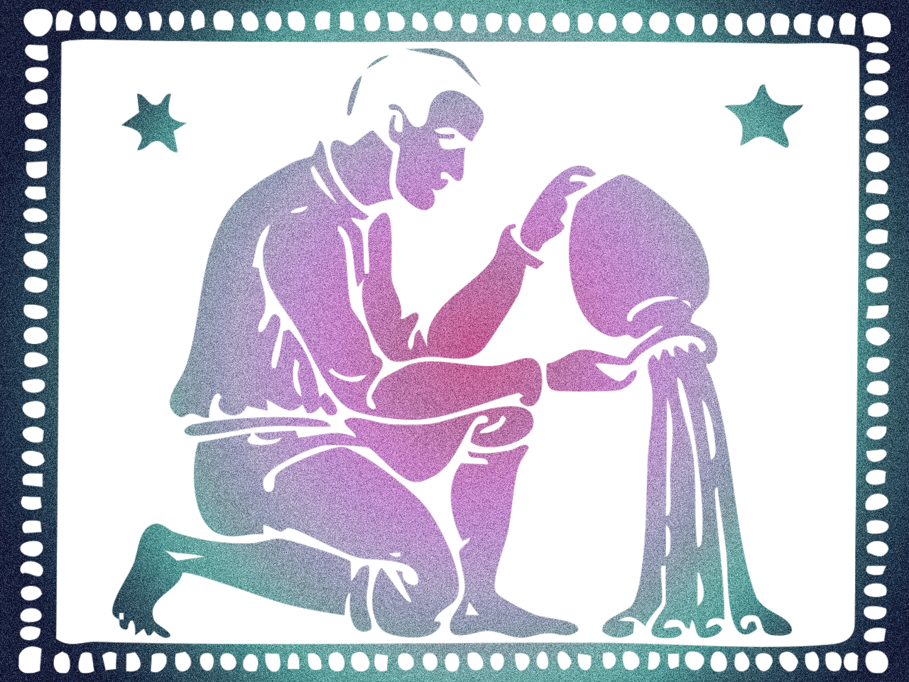

Your essential purpose in life is to view and approach all things in an impartial and humanitarian way. In doing so, you hope and intend to liberate yourself and other from guilt, fear, and conditioning. To enable you to accomplish this you are emotionally detached to one degree or another. If you like, you choose not even to recognize the emotional shortcomings of yourself and other - or if you do, you shrug them off or distance yourself from them in some way. Being such a cool observer of life makes for your being a natural psychologisy, counsellor, scientist - or simply a good friend.
However, this distancing of yourself from awkward emotional areas that reflect your own discomfort can have the effect of divorcing you not only from them but from some of your best qualities. Consequently, you stand in danger of being someone who has been processed and packaged by what you think should be you, rather than what is actually you.
And others find it very hard to relate to this, then get very emotional, and cause you to do more of the same! WHen you eventually immerse yourself in the pool, well or cess-pit of our own rejected feelings, you lend a power and conviction to yout outward expression that convinces, influence, - and liberates - both yourself and others. The reason for this being that others, and your emotional self, can then indentify with you.
However, this distancing of yourself from awkward emotional areas that reflect your own discomfort can have the effect of divorcing you not only from them but from some of your best qualities. Consequently, you stand in danger of being someone who has been processed and packaged by what you think should be you, rather than what is actually you.
And others find it very hard to relate to this, then get very emotional, and cause you to do more of the same! WHen you eventually immerse yourself in the pool, well or cess-pit of our own rejected feelings, you lend a power and conviction to yout outward expression that convinces, influence, - and liberates - both yourself and others. The reason for this being that others, and your emotional self, can then indentify with you.